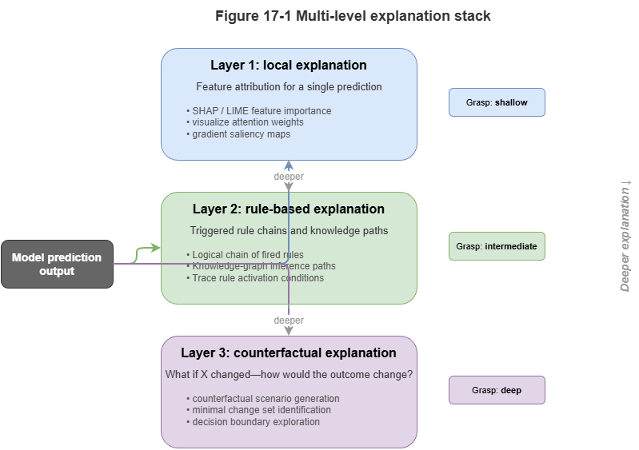
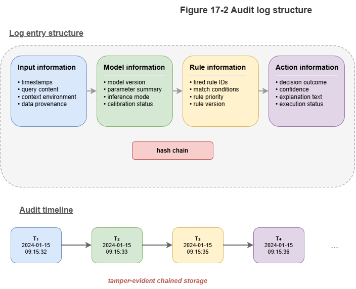
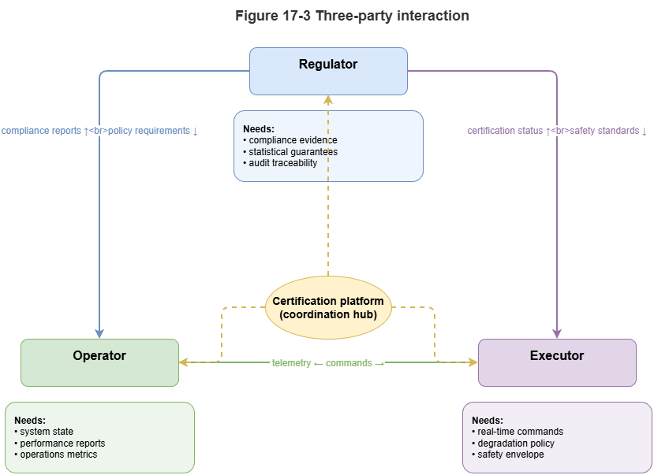

Chapters 15–16 used conformal prediction and statistical monitoring to attach formal statistical assurance to neuro-symbolic systems. Machine-readable intervals and divergence scores do not by themselves earn societal trust. In safety-critical UAM and autonomous driving, when the system refuses takeoff or commands emergency avoidance, human overseers need explanations aligned with professional judgment and, after incidents, a complete evidentiary chain.
This chapter completes the “Trustworthy Certification” arc: quantitative evaluation of explainability, airworthiness-style machine audit logs, and interfaces between AI and human regulators—from model-scale trust to sociotechnical governance trust.
17.1 Layers of Explainability: Local, Rule-Based, Causal#
Explainability is not one-dimensional. For neuro-symbolic systems we need a layered account for different stakeholders:
Local perceptual explanation (System 1): For neural modules—e.g., GAT attention or saliency maps: “When issuing the collision alert, the model focused on the two opposing UAVs in grid cell 3A.” Intuitive but not logically tight.
Symbolic rule-based explanation (System 2): A distinctive neuro-symbolic strength: cite SkyKG paths and regulations—e.g., “Takeoff denied per CCAR-XXX: payload class (hazardous) may not traverse residential graph nodes under current gusts (force 7).”
Causal and counterfactual explanation: Answers “what if”—e.g., “If UAV A had not hovered but continued, conformal trajectory tubes overlap UAV B’s by 85%; physical collision in ~3 s.” Critical for post-incident review and regulatory confidence-building.
17.2 Faithfulness, Sufficiency, and Comprehensibility#
Three widely used criteria for evaluating explanations (e.g., dual-channel outputs in Chapter 10):
Faithfulness / fidelity: The explanation must reflect what actually drove the decision, not post-hoc rationalization. If the system claims rule A, ablating A should change the decision. For LLM text, check hallucination against retrieved graph facts.
Sufficiency: Evidence and logic must support the conclusion—“obstacle detected” alone is insufficient; need type, range, time-to-collision, and legality of the maneuver.
Comprehensibility: Match cognitive load to the role—controllers need sub-second icons/alerts; investigators need full graph traces and probability curves.
17.3 Audit Trail Design for Neuro-Symbolic Systems#
Classical logs record APIs, memory, and error codes. For KG- and neural-driven low-altitude systems we need semantic audit trails.
A competent neuro-symbolic audit record (ideally tamper-evident, e.g., on a ledger) should include:
Input snapshot: Local slice of the temporal KG at decision time plus hashes of raw multi-sensor inputs.
Neural representation and confidence: Summary of neural outputs at that step plus conformal-calibrated intervals (e.g., “route tube radius 15 m, coverage guarantee 99.9%”).
Symbolic reasoning chain: IDs of fired rules, graph retrieval paths (e.g., SPARQL logs), conflict-resolution trace.
Model and knowledge versions: GNN checkpoint version and ontology/version tags so post-hoc audits use consistent baselines.
This neural + symbolic dual trail lets investigators distinguish perception failure from knowledge / rule failure.
17.4 How Human Regulators Use Explanations and Certificates#
Explanations and certificates are consumed by humans—airspace managers, remote pilots, regulators—raising trust calibration:
Avoid automation bias: After long success, overseers may rubber-stamp. UIs presenting high-risk compliance certificates should force active acknowledgment of key causal risk points.
Handle degradation: When Chapter 16’s monitors detect severe drift and conformal sets become too wide for useful avoidance, the system revokes “high-confidence certificates.” The UI must clearly signal downgrade from “AI decision mode” to conservative rule hold and demand human takeover.
17.5 Interfaces to Aviation / ADAS Safety Standards#
Scaling neuro-symbolic AI in low-altitude traffic must align with frameworks such as DO-178C and SOTIF / ISO 21448—where neuro-symbolic design helps.
DO-178C (airborne software): Pure deep learning’s opacity and huge state space struggle at high criticality levels. Neuro-symbolic symbolic rule layers (RBox) built from deterministic logic can map to high- and low-level requirements and undergo formal verification.
SOTIF (safety of the intended functionality): Emphasizes unknowns outside the operational design domain (ODD). Conformal prediction and concept-drift mechanisms can trigger explicit degradation when encountering unknown-unsafe situations—consistent with SOTIF’s safety loop.
KG-backed audit logs can be packaged as certification artifacts for authorities, shortening evidence cycles for new AI subsystems.
17.6 From Model Trustworthiness to Governance Trustworthiness#
Model trustworthiness is an engineering and mathematical question—robustness, accuracy, theoretical bounds. At city scale, with vast fleets carrying logistics, mobility, and emergency missions, we need governance trustworthiness—a sociotechnical blend of technology, institutions, people, and environment.
Neuro-symbolic AI bridges:
Connectionism (neural nets): Rich perception of the physical world and massive dynamic data—efficiency of governance.
Symbolism (KG + rules): Explicit law, ethics, and physical safety floors—bottom lines of governance.
Explanation and audit interfaces: Prevent black-box decisions from sidelining human oversight—legitimacy of governance.
The “Trustworthy Certification” narrative is now complete: knowledge substrate, dynamic reasoning, calibration, and audit-oriented design form a coherent algorithmic stack. Part VI (system foundations) lifts the view to engineering: deploying this stack on city-scale cloud–edge architectures and operational low-altitude governance engines.
Chapter Summary#
This chapter ties explainability evaluation, audit trails, and regulatory interfaces to the move from technical to governance trust: layered explanations (local, rule-based, causal); faithfulness, sufficiency, comprehensibility; semantic logs linking inputs, neural outputs, rules, and versions; human trust calibration and degradation signaling; alignment with DO-178C and SOTIF; and governance trustworthiness as the overarching goal.
Key Concepts#
Multi-layer explanation: Perception, rules, and causal/counterfactual views.
Faithfulness: Whether explanations reflect true decision drivers.
Audit trail: Tamper-evident record of inputs, inference, versions, and actions.
Trust calibration: Appropriate—not excessive—human reliance on automation.
Governance trustworthiness: Sociotechnical trust across tech, policy, people, and environment.
Exercises#
Why should one system offer local, rule-based, and causal explanations together?
Why must neuro-symbolic audit logs capture both neural and symbolic layers?
In moving from model to governance trust, what becomes the primary object of evaluation?
Case Study#
Post-hoc audit of an emergency return command: Reconstruct a full semantic trail from input snapshots, graph retrieval paths, GNN risk scores, rule hits, and final control—supporting investigation and accountability.
Figure Suggestions#
Figure 17-1: Three layers—local, rule-based, counterfactual.

Figure 17-2: Data structure of neuro-symbolic audit logs.

Figure 17-3: How regulators, operators, and executors consume explanations and certificates.

Formula Index#
This chapter is criteria- and interface-focused; no core derivations.
Index dimensions: faithfulness, sufficiency, comprehensibility; log quadruple—input, model, rules, action.
References#
Arrieta, A. B., et al. (2020). Explainable Artificial Intelligence (XAI): Concepts, Taxonomies, Opportunities and Challenges toward Responsible AI. Information Fusion, 58, 82–115.
Jacovi, A., & Goldberg, Y. (2020). Towards Faithfully Interpretable NLP Systems: A Survey. Proceedings of the 58th Annual Meeting of the Association for Computational Linguistics (ACL).
Molnar, C. (2020). Interpretable Machine Learning: A Guide for Making Black Box Models Explainable (2nd ed.).
RTCA (2011). DO-178C: Software Considerations in Airborne Systems and Equipment Certification.
ISO (2022). ISO 21448: Road Vehicles — Safety of the Intended Functionality (SOTIF).
Ribeiro, M. T., Singh, S., & Guestrin, C. (2016). “Why Should I Trust You?”: Explaining the Predictions of Any Classifier. Proceedings of the 22nd ACM SIGKDD International Conference on Knowledge Discovery and Data Mining (KDD).